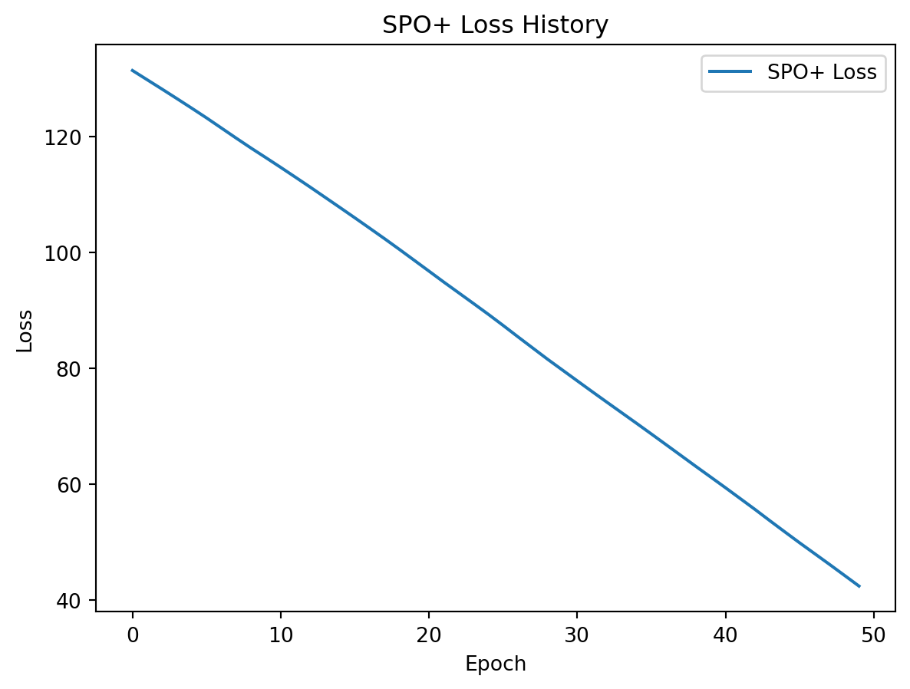

import numpy as np
import cvxpy as cp
import torch
from cvxpylayers.torch import CvxpyLayer
import matplotlib.pyplot as plt2024-09-20
Overview
The code implements the SPO+ algorithm for a simple linear optimization problem where a company decides how much of two products to produce to maximize profit. The implementation involves:
- Generating synthetic data.
- Defining the optimization problem using
cvxpyand converting it into a differentiable layer withcvxpylayers. - Training a predictive model using the SPO+ loss.
- Evaluating the model’s performance.
- Plotting the training loss history.
1. Import Necessary Libraries
Explanation
numpy: Used for numerical computations and handling arrays.cvxpy: A library for defining and solving convex optimization problems.torch: PyTorch library for automatic differentiation and deep learning.cvxpylayers.torch.CvxpyLayer: Converts CVXPY problems into differentiable PyTorch layers.matplotlib.pyplot: Used for plotting graphs (e.g., training loss history).
2. Generate Synthetic Data
# Number of data points
N = 100
# Random seed for reproducibility
np.random.seed(42)
# Generate random features (e.g., market indicators, cost factors)
X_np = np.random.randn(N, 5)
X = torch.tensor(X_np, dtype=torch.float32)
# True model parameters for profit coefficients
true_params = np.array([2.0, -1.5, 0.5, 1.0, -0.5])
# Compute the true profit coefficients c_true
c_true_scalar = X_np @ true_params + np.random.randn(N) * 0.1 # Adding small noise
# Create two profit coefficients per data point
c_true_np = np.vstack((c_true_scalar, 1.2 * c_true_scalar + 0.5)).T # Shape: (N, 2)
c_true = torch.tensor(c_true_np, dtype=torch.float32)Explanation
N = 100: Sets the number of data points to 100.np.random.seed(42): Sets the random seed for reproducibility.- Generate Features (
X_np):np.random.randn(N, 5): Generates an(N, 5)array of random numbers from a standard normal distribution. Represents 5 features for each data point.torch.tensor(X_np, dtype=torch.float32): Converts the NumPy array to a PyTorch tensor for use in PyTorch computations.
- True Model Parameters (
true_params):- An array of coefficients representing the true relationship between features and profit coefficients.
- Compute True Profit Coefficients (
c_true_scalar):X_np @ true_params: Matrix multiplication to compute the linear combination of features and true parameters.+ np.random.randn(N) * 0.1: Adds small Gaussian noise to simulate real-world data imperfections.
- Create Two Profit Coefficients (
c_true_np):- First Profit Coefficient:
c_true_scalar. - Second Profit Coefficient:
1.2 * c_true_scalar + 0.5(a linear function of the first coefficient). np.vstackand.T: Stacks the two profit coefficients vertically and transposes to get a shape of(N, 2).torch.tensor(c_true_np, dtype=torch.float32): Converts to a PyTorch tensor.
- First Profit Coefficient:
3. Define Production Constraints
# Production constraints
max_capacity = 100 # Maximum total production capacity
x_bounds = (0, None) # Production quantities must be non-negative
# Resource consumption coefficients for the two products
resource_coeffs = np.array([1.0, 1.0]) # Each unit consumes one unit of resource
resource_limit = 100 # Total available resourceExplanation
max_capacity: Total capacity for production.x_bounds: Specifies that production quantities (x) are non-negative (no upper bound).resource_coeffs: Coefficients representing the amount of resource consumed per unit of each product.resource_limit: Total available resources for production.
4. Define the Optimization Problem Using CVXPY
def create_cvxpy_layer():
x_var = cp.Variable(2)
c_param = cp.Parameter(2)
objective = cp.Maximize(c_param @ x_var)
constraints = [resource_coeffs @ x_var <= resource_limit, x_var >= 0]
problem = cp.Problem(objective, constraints)
assert problem.is_dpp()
cvxpylayer = CvxpyLayer(problem, parameters=[c_param], variables=[x_var])
return cvxpylayer
cvxpylayer = create_cvxpy_layer()Explanation
- Function
create_cvxpy_layer():- Variables:
x_var = cp.Variable(2): Decision variables representing quantities of the two products.c_param = cp.Parameter(2): Parameters representing the profit coefficients (will be provided during the forward pass).
- Objective Function:
cp.Maximize(c_param @ x_var): Maximize the total profit (c_paramtransposed and multiplied byx_var).
- Constraints:
resource_coeffs @ x_var <= resource_limit: Total resource consumption must not exceed the limit.x_var >= 0: Production quantities must be non-negative.
- Problem Definition:
problem = cp.Problem(objective, constraints): Combines the objective and constraints into an optimization problem.
- DPP Check:
assert problem.is_dpp(): Asserts that the problem is a Disciplined Parameterized Program (necessary forcvxpylayersto work).
- Create
CvxpyLayer:cvxpylayer = CvxpyLayer(problem, parameters=[c_param], variables=[x_var]): Converts the CVXPY problem into a differentiable layer.
- Variables:
- Instantiate the Layer:
cvxpylayer = create_cvxpy_layer(): Creates thecvxpylayerobject that will be used during training.
5. Initialize Model Parameters
# Initialize model parameters
model_params = torch.randn(5, 2, requires_grad=True) # Shape: (5, 2)Explanation
model_params:torch.randn(5, 2): Initializes the model parameters randomly for a linear model. Shape(number_of_features, number_of_outputs)i.e.,(5, 2).requires_grad=True: Enables gradient computation for these parameters during training.
6. Set Training Hyperparameters
# Learning rate
learning_rate = 0.01
# Number of training epochs
epochs = 50
# Optimizer
optimizer = torch.optim.Adam([model_params], lr=learning_rate)Explanation
learning_rate: Step size for the optimizer.epochs: Number of times the training loop will iterate over the dataset.optimizer:torch.optim.Adam: An optimizer that implements the Adam algorithm, which adapts the learning rate for each parameter.[model_params]: Parameters to be updated by the optimizer.lr=learning_rate: Sets the learning rate.
7. Train the Predictive Model Using SPO+ Loss
# Record losses for plotting
loss_history = []
for epoch in range(epochs):
epoch_loss = 0.0
for i in range(N):
features = X[i] # Shape: (5,)
c_t = c_true[i] # Shape: (2,)
c_pred = features @ model_params # Predicted profit coefficients, Shape: (2,)
# Compute c_bar
c_bar = 2 * c_pred - c_t
# First optimization: max_{x in X} (2 * c_pred - c_true)^T x
x_star1, = cvxpylayer(c_bar, solver_args={'solve_method': 'ECOS'})
z1 = c_bar @ x_star1
# Second optimization: max_{x in X} c_pred^T x
x_star2, = cvxpylayer(c_pred, solver_args={'solve_method': 'ECOS'})
z2 = c_pred @ x_star2
# SPO+ loss
loss = z1 - z2
epoch_loss += loss
# Backpropagation and parameter update
optimizer.zero_grad()
epoch_loss.backward()
optimizer.step()
avg_loss = epoch_loss.item() / N
loss_history.append(avg_loss)
if (epoch + 1) % 10 == 0:
print(f"Epoch {epoch + 1}/{epochs}, SPO+ Loss: {avg_loss:.4f}")Epoch 10/50, SPO+ Loss: 116.3783
Epoch 20/50, SPO+ Loss: 98.6622
Epoch 30/50, SPO+ Loss: 79.6929
Epoch 40/50, SPO+ Loss: 61.2044
Epoch 50/50, SPO+ Loss: 42.3735Explanation
loss_history: List to store the average loss at each epoch for plotting.- Training Loop:
for epoch in range(epochs):: Iterates over the number of epochs.epoch_loss = 0.0: Initializes the cumulative loss for the epoch.- Data Loop:
for i in range(N):: Iterates over each data point.- Extract Features and True Coefficients:
features = X[i]: Features for thei-th data point.c_t = c_true[i]: True profit coefficients for thei-th data point.
- Predict Profit Coefficients:
c_pred = features @ model_params: Predicts profit coefficients using the current model parameters.
- Compute
c_bar:c_bar = 2 * c_pred - c_t: Used in the SPO+ loss calculation.
- First Optimization (
z1):x_star1, = cvxpylayer(c_bar, solver_args={'solve_method': 'ECOS'}): Solves the optimization problem withc_baras the profit coefficients.z1 = c_bar @ x_star1: Computes the objective value (total profit) for the first optimization.
- Second Optimization (
z2):x_star2, = cvxpylayer(c_pred, solver_args={'solve_method': 'ECOS'}): Solves the optimization problem withc_predas the profit coefficients.z2 = c_pred @ x_star2: Computes the objective value for the second optimization.
- Compute SPO+ Loss:
loss = z1 - z2: The SPO+ loss for the data point.epoch_loss += loss: Accumulates the loss over the epoch.
- Backpropagation and Parameter Update:
optimizer.zero_grad(): Clears old gradients.epoch_loss.backward(): Computes gradients of the loss with respect tomodel_params.optimizer.step(): Updates the model parameters using the computed gradients.
- Record Average Loss:
avg_loss = epoch_loss.item() / N: Calculates the average loss over all data points.loss_history.append(avg_loss): Stores the average loss for plotting.
- Print Progress:
- Every 10 epochs, prints the current epoch and average loss.
Key Points
- Differentiable Optimization: By using
cvxpylayers, we can compute gradients through the optimization problem, allowing us to updatemodel_paramsbased on how the predictions affect the optimization outcome. - Per-Data-Point Optimization: The optimization problem is solved for each data point in each epoch, which can be computationally intensive but is necessary for the SPO+ approach.
- Loss Accumulation: The loss is accumulated over all data points before performing backpropagation.
8. Evaluate the Model’s Performance
# Evaluate the model
def total_profit(c_true, model_params, X):
profit = 0.0
for i in range(N):
features = X[i]
c_pred = features @ model_params
x_star, = cvxpylayer(c_pred, solver_args={'solve_method': 'ECOS'})
profit += c_true[i] @ x_star
return profit.item() / N
profit_spo = total_profit(c_true, model_params, X)
print(f"Average Profit using SPO+ model: {profit_spo:.2f}")Average Profit using SPO+ model: 102.55Explanation
- Function
total_profit():- Computes the average profit over all data points using the trained model.
- Parameters:
c_true: True profit coefficients.model_params: Trained model parameters.X: Features.
- Process:
- Initialize
profit = 0.0. - Loop over Data Points:
features = X[i]: Get features for data pointi.c_pred = features @ model_params: Predict profit coefficients.- Solve Optimization Problem:
x_star, = cvxpylayer(c_pred, solver_args={'solve_method': 'ECOS'}): Get optimal production quantities based on predicted profits.
- Compute Actual Profit:
profit += c_true[i] @ x_star: Calculate profit using true profit coefficients and predicted decisions.
- Return Average Profit:
profit.item() / N: Returns the average profit over all data points.
- Initialize
- Compute and Print Average Profit:
profit_spo = total_profit(c_true, model_params, X): Computes the average profit using the trained model.print(f"Average Profit using SPO+ model: {profit_spo:.2f}"): Prints the average profit.
Key Points
- Evaluation Metric: The average profit reflects the quality of the decisions made using the model’s predictions.
- Use of True Profits: The actual profit is computed using the true profit coefficients (
c_true) but with decisions (x_star) based on the model’s predicted profits (c_pred). - No Gradient Computation: During evaluation, gradients are not needed, so we don’t perform backpropagation.
9. Plot the Training Loss History
# Plot Loss History
plt.plot(loss_history, label='SPO+ Loss')
plt.xlabel('Epoch')
plt.ylabel('Loss')
plt.legend()
plt.title('SPO+ Loss History')
plt.show()
Explanation
- Plotting:
plt.plot(loss_history, label='SPO+ Loss'): Plots the loss history over epochs.plt.xlabel('Epoch'): Labels the x-axis.plt.ylabel('Loss'): Labels the y-axis.plt.legend(): Displays the legend.plt.title('SPO+ Loss History'): Sets the plot title.plt.show(): Displays the plot.
Key Points
- Visualization: Helps to understand how the loss decreases over time during training.
- Monitoring Training: Useful for diagnosing issues like overfitting or underfitting.
Additional Notes
- Solver Selection:
solver_args={'solve_method': 'ECOS'}: Specifies the solver to be used bycvxpy. ECOS is efficient for small to medium-sized problems.- Ensure that the solver is installed. If not, you can install it via
pip install ecos.
- Computational Intensity:
- Solving an optimization problem for each data point in every epoch is computationally intensive. For larger datasets, consider batch processing or using more efficient algorithms.
- Handling Solver Failures:
- In a production environment, you should handle cases where the solver fails to find a solution (e.g., due to numerical issues) to prevent the program from crashing.
- PyTorch Device Management:
- The code assumes computations are performed on the CPU. For larger computations, you might want to move tensors to a GPU by specifying
device='cuda'if a GPU is available.
- The code assumes computations are performed on the CPU. For larger computations, you might want to move tensors to a GPU by specifying
Summary
- Objective: Implement the SPO+ framework to train a predictive model that directly minimizes the impact of prediction errors on optimization outcomes.
- Approach:
- Use synthetic data to simulate a real-world scenario.
- Define an optimization problem that models the decision-making process.
- Integrate the optimization problem into the training loop using
cvxpylayers, allowing gradients to flow through the solver. - Train the model parameters using the SPO+ loss, which measures the regret between decisions made with predicted and true profit coefficients.
- Outcome:
- The model learns to make predictions that lead to better decisions in terms of actual profit.
- The training loss history and average profit provide insights into the model’s performance.